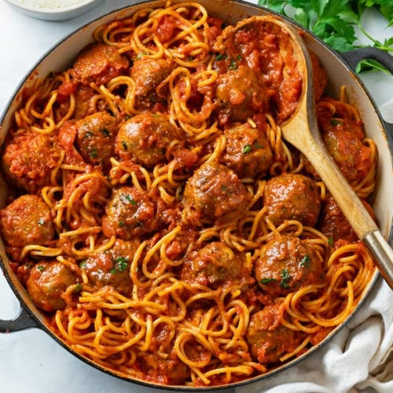

Spaghetti with Meatballs

Description
Spaghetti and meatballs is an Italian-American dish consisting of spaghetti, tomato sauce and meatballs.
Ingredients
- 1 lb.spaghetti
- 1 lb.ground beef
- 1/3 c.bread crumbs
- 1/4 c.finely chopped parsley
- 1/4 c.freshly grated Parmesan, plus more for serving
- 1large egg
- 2garlic cloves, minced Kosher salt
- 1/2 tsp.red pepper flakes
- 2 tbsp.extra-virgin olive oil
- 1/2 c.onion, finely chopped
- 1 (28-oz.)can crushed tomatoes
- 1bay leaf
- 2 tbsp.freshly ground black pepper